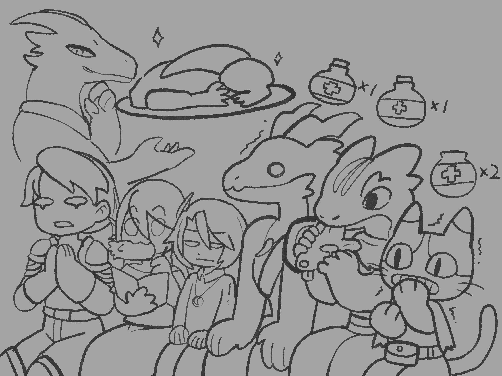

Chapter 2: The Silver Dragon's Treat
Heir to Rathanad


Heir to Rathanad
15049.05.02
聽見親生父親費洛登的提議，阿龍並不感到驚恐。不過就是見條龍，有什麼大不了的，但除了他之外，所有人都沒有發聲。阿龍看了看親戚們的表情，各有不同。
接著，費洛登便離開了餐桌。下午他還得回到他的崗位。
冒險者們圍繞到阿龍身邊，依他們所知，龍是恐怖的存在，不只體型比阿龍大上好幾倍，個性上通常不是殘暴，就是喜愛操弄人心。鑰和瑪莉貝爾對於能見到龍這樣傳奇的生物，都感到十分有興趣；綠先生則已經做了逃脫的準備。
堂姐瑟拉斯輕聲唸了句「只不過是條龍，怕成這樣」，挑起了阿龍的情緒，其他冒險者們也跟著阿龍幫腔，但瑟拉斯對這些閒言閒語沒有多加理會，也離開了餐桌。
堂弟維瑞克給了阿龍一些關於龍的知識，讓阿龍多少有點心理準備。但現場所有親戚們都表示他們沒有見過任何龍。阿龍好奇著自己要見得這頭龍是什麼龍，聽說不同種類的龍個性不同。此時，他的腦海中浮現了一個有點熟悉，但又認不得的聲音，說了聲「銀龍」。阿龍感到欣喜，能在腦中聽到聲音，他肯定是天選之人。這也讓他對見龍的計劃更有信心了。
堂妹奈梨紗表示他有畫過一幅關於龍的畫，雷亞、毛毛和鑰跟著他一起去了他的小畫室。裡頭有些雜亂，但奈梨紗依舊翻出了那幅畫。畫上是一頭昂首的銀龍，十分美麗。在爭取了奈梨紗的同意後，三人獨處在畫室內，雷亞和毛毛以及鑰說了剛剛自己注意到哈洛的異常之處：當阿龍的父親宣告他見龍的任務時，哈洛似乎笑了一下。他們一致認同，應該要去找哈洛詢問那抹微笑的意思。
同一時間，哈洛攙扶著老尼克索，正準備送他回去。阿龍陪著他們走出宅邸，也從哈洛那裡得知，他認為見龍不一定會有生命危險，也建議他們先觀察看看那頭龍的性格，再決定應該要怎麼與他互動。
叔叔瑟拉蒙和嬸嬸艾內莫詢問冒險者們有沒有任何需要幫助的，也建議他們出發前可以先到市集去做些採買。在確定家族無法給多少錢後，冒險者們最多能得到的幫忙，就是嬸嬸艾內莫陪同他們去採買了。
離開前，阿龍找了他的母親瑟萊拉，想詢問他自己的本名賽拉尼爾是否有什麼特別的意思？母親告訴他，等他得到自己的繼承權，他便會告訴他。
艾內莫帶著冒險者們來到中城區的市集。在艾內莫的指引下，羅羅去了一家烘焙坊。他看見櫃檯前擺了兩尊精緻的龍造型的麵包，便爽快的買了下來，一手抬著一尊，蹣跚地走了出來。
其他人則在艾內莫的帶領下，再次來到哈洛的魔法商店，但他們也發現魔法商店此時是關的。毛毛試圖開鎖，卻無法成功，但他試著把窗戶搖開，讓雷亞和鑰先跳了進去，再從店內把門打開。除了艾內莫外，其他人都大搖大擺地走入了店內。
哈洛不在店內，但櫃檯內似乎有點騷動。毛毛往裡面探去，看到一隻瘦小的生物正在翻找東西。他快速地抓住了這隻生物背上的皮，把他拎了起來。那是一隻狗頭人。
狗頭人宣稱自己是幫哈洛跑腿的，剛剛是跑來送貨，但冒險者們都覺得他有偷東西的嫌疑。他們也和狗頭人詢問，得知銀龍米札哈里爾的洞穴外有一群狗頭人，負責幫忙看守洞口。另外，狗頭人很喜歡亮晶晶的東西，像是錢幣。
店門被推開，哈洛走了進來。冒險者們和哈洛告了狀，哈洛搜了狗頭人的身，只翻到一枚銅幣，便把狗頭人趕走了。他也承認這頭狗頭人是他聘來送貨的沒有錯。
雷雅等人詢問了哈洛聽到阿龍要見龍的任務，為何笑了出來？哈洛則表示他很意外自己是唯一笑的人。他認為能有機會見龍是件挺有趣的事，儘管冒險者們（除了阿龍外）都覺得這只是艾瑞利斯家用來把阿龍除掉的方法而已。
離開了店舖後，大家在阿龍的鼓動下，先回到艾瑞利斯家的宅邸。阿龍提議和堂妹奈梨紗借用他的畫，以粉絲的身份去見銀龍，讓銀龍為他簽名。然而，固執的奈梨紗認為這幅畫是他的作品，重要的不是畫上的龍，而是他身為畫家的感受。幾名冒險者也回想起在午餐時，他們有觀察到哈洛和奈梨紗之間似乎感情不錯，可能有些私交。
阿龍的計畫失敗了，但他們還是得去見龍。大家坐上綠先生的馬車，驅車前往城門外。左轉後騎了一段路程，一座洞穴出現在眼前。如果仔細看，還可以看到洞穴外有一群狗頭人閒晃著。
綠先生想待在馬車上，但被阿龍和雷雅架了下來。一行人慢慢走向銀龍的巢穴。
洞穴外的狗頭人數量不少，大約有二、三十隻。毛毛試圖與他們溝通，而瑪莉貝爾則在溝通的同時把狗頭人的資訊記錄在他的筆記本內。毛毛得知狗頭人們都是因為父母的教導，才知道自己要在銀龍的洞穴外守護，甚至，銀龍沒跟大多數的狗頭人說過話，遑論給薪水了。他們平常靠著吃土維生（對於這點，冒險者們猜測土中多少有些小昆蟲，能為狗頭人補充蛋白質）。狗頭人也表示，銀龍都是天一亮就離開，天黑晚餐時間後才回到洞穴來。
毛毛試圖用金幣來吸引狗頭人的注意，想收買他們，但一口氣所有狗頭人朝他圍了過來，還是令他感到十分恐懼。
在等待日落的期間，冒險者們決定先搭起營火，他們甚至把之前買來的棉花糖拿來烤，分給狗頭人們吃。狗頭人們對棉花糖的評價不一，有的吃完就伸手再要一個，也有咬了一口就吐在地上的個體。
日落後，一頭龍盤旋在天空，狗頭人們朝著洞口跪了下來。冒險者們除了阿龍外，都跑到附近的遮蔭處躲了起來。阿龍則站得直挺挺的看著天空上那頭龍緩緩地停在洞口。
「你來了啊，阿龍。」這便是那個在他腦中說了「銀龍」的聲音。「來吧，你和你的夥伴們，一起進來喝茶吧。」冒險者們紛紛從躲藏處慢慢地走了出來。「啊，抱歉，你們可能不太習慣我的這身模樣。」
轉瞬間，銀龍米札哈里爾幻化了身影。出現在冒險者們身前的是個他們熟悉的身影。
魔法商店老闆哈洛・米佐。
走入銀龍的洞穴，冒險者們戰戰兢兢地圍坐在圓桌旁。哈洛從旁邊的房間端出茶具，讓冒險者們享用，但冒險者們此時的情緒都非常緊繃。哈洛詢問他們是否要改喝酒，也提到自己手邊有不錯的下酒菜。接著，他便端出了一盤生肉：那是今天稍早冒險者們在哈洛的店鋪內看見的狗頭人，如今頭已被切下，四肢分別剁開。肉還是生的。
冒險者們想起他們稍早趁著哈洛不在時，偷摸走了幾瓶的治療藥水，冷汗直流。
哈洛告訴阿龍，他有個東西可以送給他，能作為他見到龍的證據，也會賜予他部分的魔法力量。他解釋到，阿龍會沒有魔法，他也得承擔部分的責任。在阿龍的父親費洛登即位時，為了要鞏固自己身為龍冠的地位，費洛登曾隻身前往洞穴，與當時不時肆虐村莊的銀龍「米札哈里爾」談判。談判十分順利：米札哈里爾不再侵犯村莊，但艾瑞利斯，這個最在意魔法的世家，每一代的第一繼承人，都將失去使用魔法的能力。哈洛也告訴阿龍，他被父母拋棄這件事與他無關，純粹是他父母的決定。
阿龍心想著，哈洛送他的禮物可以讓他使用魔法，也許能拿來追蹤失蹤的佩妮與大奧斯，便欣然答應了。但哈洛表示，阿龍若要接受這份禮物，需要答應玩一場遊戲。這場遊戲將在他們今晚睡了一場好覺後，明天起床後開始。而這遊戲的名字便是「Whodunit（兇手是誰）」。哈洛也警告，若失敗了這場遊戲，阿龍會後悔這一切。
阿龍決定接下這個挑戰，同時也接下了哈洛送給他的禮物：一把權杖。這把權杖可以讓他聽懂、看懂這世上的所有語言，但使用上還是有部分的限制。
哈洛起身送客，也請綠先生代他向萊里問好。
冒險者們回到下榻的酒館，遇見正在喝酒的老尼克索。依照哈洛的說法，老尼克索也清楚知道他的身份。
阿龍詢問老尼克索關於自己的蛋被他丟棄的事，老尼克索也表示自己當時和艾瑞利斯家請了假，出了一趟旅行，然後將阿龍的蛋與他寫的信一起順流而下。
眼看綠先生一直想逃離這個村莊，羅羅偷偷溜了出去，把馬車的馬解了開了，將馬騎到了艾瑞利斯家（羅羅也很意外自己竟然能這麼順利地騎馬）停在馬廄，並綁好韁繩。然而，他似乎注意到艾瑞利斯家的深夜裡，有蠟燭在緩緩移動。但他並未深入探究，慢慢走回酒館去。
不久後，毛毛醉了，冒險者們也和店家訂了客房。瑪莉貝爾提議要先沙盤推演一下明天可能會發生什麼事：這個「遊戲」似乎會是個案件，但是會是竊盜、兇殺，還是什麼案件，大家都沒有頭緒。
15049.05.03
大夥兒在酒館一樓用了早餐，便趕緊前往艾瑞利斯宅邸去。大家都知道肯定會有什麼壞事發生。綠先生則繼續嚷嚷著哈洛要他和萊里問好，他應該要駕馬車回去找萊里才對。
艾瑞利斯家的門是開的。阿龍踏了進去，便看見身穿黑衣的他的叔叔瑟拉蒙走向他，深深地抱緊了他。「阿龍，我很抱歉。」其他的家族成員也都身穿黑衣。「你的父母他們……你想見他們最後一面嗎？」
阿龍點了點頭，大家便被領去奈梨紗的畫室。
阿龍的父母併坐著，雙手互相緊握著，胸口各插了一把匕首。
而在他們背後的牆上，掛著一幅畫，上面是兩頭雙手互相緊握的騰空的龍。
這畫風，雷亞、毛毛和鑰昨天才見過。
Hearing the proposal from his birth father Vaerodan, Al-lon did not feel frightened. It was only meeting a dragon. What was the big deal? But everyone except him remained silent. Al-lon looked over the expressions on his relatives' faces, and each one showed something different.
Vaerodan then left the table. He still had to return to his post that afternoon.
The adventurers gathered around Al-lon. From what they knew, dragons were terrifying beings, not only many times larger than Al-lon, but usually either brutal or fond of toying with people's minds. Kaname and Maribel were both very interested in the chance to see such a legendary creature, while Mr. Green had already begun preparing his escape.
His older female cousin Serathe softly muttered, "It's only a dragon. Why be so scared?" which stirred up Al-lon's emotions. The other adventurers immediately backed him up, but Serathe paid their comments no attention and simply left the table.
His younger male cousin Vaelric gave Al-lon some information about dragons, which at least helped him prepare mentally. Even so, all the relatives present said that they had never seen an actual dragon themselves. Al-lon found himself wondering what kind of dragon he was going to meet, since he had heard that different kinds of dragons had different temperaments. At that moment, a somewhat familiar but unrecognizable voice appeared in his mind and said, "Silver dragon." Al-lon was thrilled. If he could hear a voice in his head, then surely he was chosen by fate. That only made him even more confident about the plan to meet the dragon.
His younger female cousin Nylessa said that she had painted a picture of a dragon, and Leah, Fur, and Kaname followed her to her little studio. It was somewhat messy inside, but Nylessa still managed to pull out the painting. It showed a proud silver dragon lifting its head, and it was beautiful. After getting Nylessa's permission, the three remained alone in the studio, where Leah, Fur, and Kaname talked about the odd thing they had noticed about Harrel earlier: when Al-lon's father announced the task of meeting the dragon, Harrel had seemed to smile. They all agreed that they should ask Harrel what that smile had meant.
At the same time, Harrel was supporting Old Nixul and preparing to take him home. Al-lon walked out of the estate with them, and Harrel told him that he did not believe meeting the dragon would necessarily be life-threatening. He suggested that they first observe the dragon's temperament before deciding how to interact with it.
His uncle Theramond and aunt Enelmor asked whether the adventurers needed any help, and also suggested that they do some shopping at the market before setting out. Once it became clear that the family could not provide much money, the most help the adventurers could expect was Enelmor accompanying them on their shopping trip.
Before leaving, Al-lon found his mother Selyra and asked whether his true name, Cyrinel, had any special meaning. His mother told him that once he reclaimed his inheritance, she would tell him.
Enelmor led the adventurers to the market in the middle district. Following her directions, Roel went into a bakery. He saw two exquisite dragon-shaped loaves displayed at the counter and immediately bought them, carrying one under each arm as he staggered back out.
The others, under Enelmor's guidance, returned to Harrel's magic shop, only to find that it was closed. Fur tried picking the lock without success, but he did manage to shake open a window, allowing Leah and Kaname to climb inside and then open the door from within. Everyone except Enelmor then swaggered right into the shop.
Harrel was not in the shop, but there seemed to be some movement behind the counter. Fur peered over and saw a small, skinny creature rummaging through things. He quickly grabbed the skin on its back and lifted it up. It was a kobold.
The kobold claimed that it worked errands for Harrel and had only come to deliver something, but the adventurers all suspected it of stealing. After questioning it, they learned that a group of kobolds guarded the entrance to the cave of the silver dragon Myz'haril. They also learned that kobolds loved shiny things, such as coins.
The shop door opened and Harrel walked in. The adventurers immediately complained to him. Harrel searched the kobold, found only a single copper coin, and then drove it away. He also admitted that the kobold really was one of his hired delivery runners.
Leah and the others asked Harrel why he had smiled when he heard that Al-lon was being sent to meet the dragon. Harrel replied that he was surprised he had been the only one smiling. He thought that getting the chance to meet a dragon sounded quite interesting, even though the adventurers, with the exception of Al-lon, all believed this was simply the Arylith family's way of getting Al-lon killed.
After leaving the shop, and with Al-lon urging them on, everyone first returned to the Arylith estate. Al-lon proposed borrowing Nylessa's painting so that he could meet the silver dragon as a fan and ask the dragon to sign it. But stubborn Nylessa insisted that the painting was her work, and what mattered was not the dragon depicted in it, but her own feelings as an artist. Several of the adventurers also remembered noticing at lunch that Harrel and Nylessa seemed to get along quite well, and perhaps had some private connection.
Al-lon's plan failed, but they still had to go meet the dragon. Everyone climbed into Mr. Green's carriage and rode out beyond the city gates. After turning left and traveling for a while, a cave came into view. Looking closely, they could also see a number of kobolds wandering around outside it.
Mr. Green wanted to remain on the carriage, but Al-lon and Leah dragged him down. The group then slowly approached the silver dragon's lair.
There were quite a lot of kobolds outside the cave, around twenty or thirty. Fur tried to communicate with them, while Maribel wrote down information about the kobolds in her notebook as the conversation went on. Fur learned that the kobolds only knew they were supposed to guard the silver dragon's cave because their parents had taught them so. In fact, the silver dragon had barely spoken to most of them, much less paid them. They survived mainly by eating dirt, though the adventurers guessed that there were probably enough tiny insects in the soil to provide them with some protein. The kobolds also said that the silver dragon always left at daybreak and only returned after dark, around dinner time.
Fur tried using gold coins to attract the kobolds' attention and buy them off, but when all of them rushed toward him at once, he still found the experience absolutely terrifying.
While waiting for sunset, the adventurers decided to build a campfire. They even roasted the marshmallows they had bought earlier and shared them with the kobolds. The kobolds had mixed opinions on the marshmallows. Some reached out for another one as soon as they finished, while others took one bite and spat it onto the ground.
After sunset, a dragon circled in the sky, and the kobolds dropped to their knees facing the cave entrance. Everyone except Al-lon ran to nearby shadows to hide. Al-lon, on the other hand, stood ramrod straight and watched as the dragon slowly descended to the entrance.
"So you've come, Al-lon." It was the same voice that had said "silver dragon" in his mind. "Come. You and your companions, all of you, come in and have tea with me." The adventurers slowly emerged from their hiding places. "Ah, pardon me. You may not be very used to this form of mine."
In an instant, the silver dragon Myz'haril shifted shape. Standing before the adventurers was a figure they recognized well.
Harrel Mizel, the magic shop owner.
Entering the silver dragon's cave, the adventurers sat uneasily around a round table. Harrel brought out a tea set from a side room for them, but everyone remained extremely tense. Harrel asked whether they would prefer alcohol instead, and mentioned that he also had some rather good drinking snacks. Then he brought out a plate of raw meat: it was the kobold the adventurers had seen earlier in Harrel's shop, now with its head cut off and its limbs chopped apart. The meat was still raw.
The adventurers remembered the healing potions they had stolen earlier while Harrel was out, and cold sweat broke out all over them.
Harrel told Al-lon that he had something to give him, something that could serve as proof that he had met a dragon and would also grant him part of a magical power. He explained that he himself bore some responsibility for Al-lon's lack of magic. When Al-lon's father Vaerodan had ascended to the Dragoncrown, he had gone alone to this cave to negotiate with the silver dragon Myz'haril, who at that time had repeatedly terrorized the village. The negotiation had gone very smoothly: Myz'haril would no longer attack the village, but the Arylith family, this lineage that prized magic above all else, would lose the ability to use magic in the first heir of each generation. Harrel also told Al-lon that his abandonment by his parents had nothing to do with Harrel. That had purely been his parents' own decision.
Al-lon thought that Harrel's gift, which would allow him to use magic, might perhaps help him track down the missing Penny and Big Os, so he gladly agreed. But Harrel said that if Al-lon wanted to accept the gift, he would first have to agree to play a game. The game would begin the next morning, after they had all enjoyed a good night's sleep. The game's name was "Whodunit." Harrel also warned that if Al-lon failed the game, he would regret all of this.
Al-lon decided to accept the challenge, and with it accepted Harrel's gift as well: a scepter. The scepter would allow him to hear and understand every language in the world, though it still had certain limitations in practice.
Harrel rose to see them out and asked Mr. Green to pass along his regards to Riley.
The adventurers returned to the tavern where they were staying and found Old Nixul drinking there. According to Harrel, Old Nixul also fully knew Al-lon's identity.
Al-lon asked Old Nixul about how his egg had been cast away, and Old Nixul explained that he had taken leave from the Arylith family at the time, gone on a journey, and then set Al-lon's egg drifting downstream together with the letter he had written.
Seeing that Mr. Green kept wanting to flee the village, Roel quietly slipped out, untied the carriage horses, and rode one of them to the Arylith estate. He was quite surprised himself at how smoothly he managed to ride. He left the horse in the stable and tied off the reins properly. However, he noticed candlelight moving slowly around the Arylith estate late at night. He did not investigate any further and simply walked back to the tavern.
Before long, Fur got drunk, and the adventurers rented rooms from the inn as well. Maribel suggested that they first try to reason through what might happen tomorrow. This "game" seemed likely to be some sort of case, but whether it would involve theft, murder, or something else entirely, nobody had any clue.
15049.05.03
After breakfast on the first floor of the tavern, everyone hurried to the Arylith estate. They all knew that something terrible must have happened. Mr. Green kept grumbling that Harrel had told him to pass greetings to Riley, and that really he ought to drive the carriage back to Riley instead.
The doors of the Arylith estate stood open. As Al-lon stepped inside, he saw his uncle Theramond, dressed in black, walking toward him and embracing him tightly. "Al-lon, I'm sorry." The other members of the family were all dressed in black as well. "Your parents... would you like to see them one last time?"
Al-lon nodded, and the group was led to Nylessa's studio.
Al-lon's parents sat side by side, their hands tightly clasped together, each with a dagger buried in their chest.
And on the wall behind them hung a painting of two dragons floating in the air, their hands clasped together.
Leah, Fur, and Kaname had seen that painting style only yesterday.